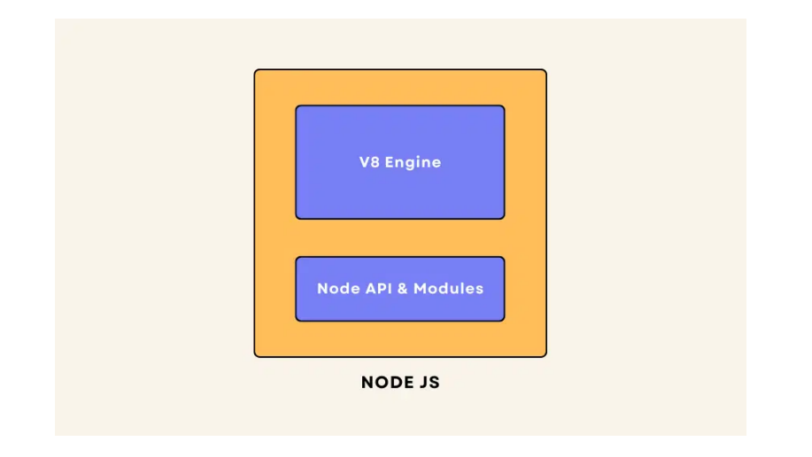
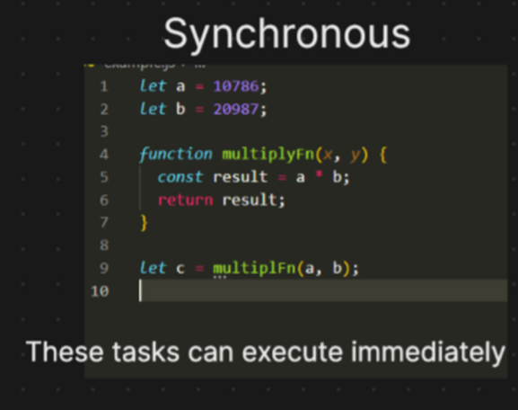
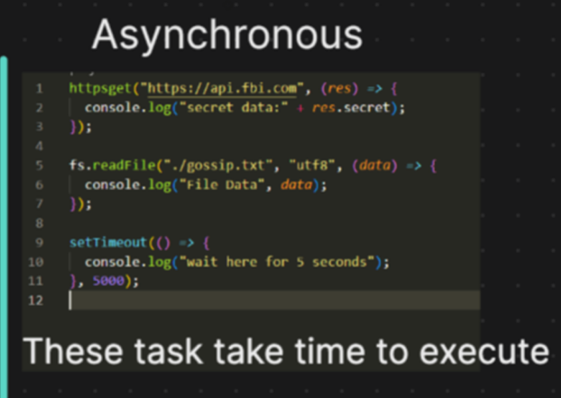
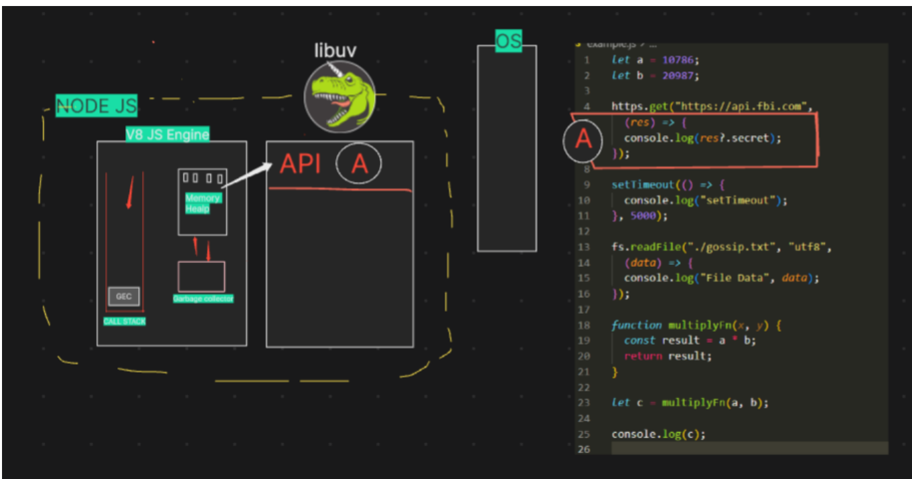
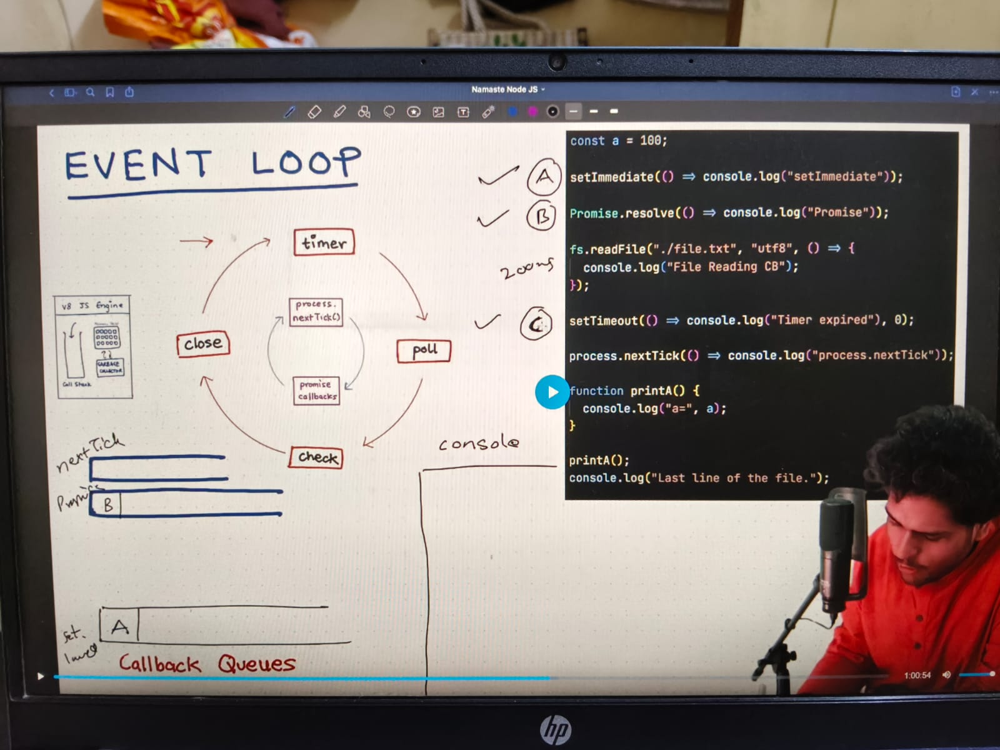

📘 History of Node.js
Introduction
Node.js is one of the most popular technologies for building backend applications. It allows JavaScript to run outside the browser and helps developers build fast, scalable and real-time applications.
1. Who Developed Node.js?
- Node.js was developed by Ryan Dahl.
- The first version of Node.js was released in 2009.
2. Initial Development
- Ryan Dahl first started developing Node.js using SpiderMonkey, which is the JavaScript engine used by Mozilla Firefox.
- Every web browser has its own JavaScript engine.
- Google Chrome uses the V8 Engine.
- Mozilla Firefox uses the SpiderMonkey Engine.
3. Switching to the V8 Engine
- After about two days of development, Ryan Dahl switched from SpiderMonkey to Google's V8 Engine.
- The exact reason for the switch is not publicly known.
- Today, Node.js uses Google's V8 JavaScript Engine.
4. Joyent Joined the Project
- Ryan Dahl initially developed Node.js independently.
- At the same time, a company called Joyent was also interested in running JavaScript on the server.
- Joyent approached Ryan Dahl and invited him to work together.
- Ryan Dahl joined Joyent as an employee and continued developing Node.js.
- Later, many more developers joined the project.
5. Who Maintains Node.js Today?
- Node.js is not maintained by Joyent today.
- It is maintained by the OpenJS Foundation.
6. Why Was It Called Node.js?
- In the early stages, Ryan Dahl named the project Web.js.
- The original goal was mainly to build web servers.
- Later, Ryan Dahl realized that JavaScript could do much more than just create servers.
- He renamed it to Node.js.
-
Today, Node.js is used for:
- Building web servers
- Real-time chat applications
- Socket communication
- REST APIs
- Third-party API integration
- Microservices
- Many other backend applications
7. Why Was Node.js Created?
- While developing Node.js, Ryan Dahl observed that the Apache HTTP Server used a blocking approach.
- Blocking servers make requests wait until the current request is finished.
- Ryan Dahl wanted to solve this problem.
- He designed Node.js as a Non-Blocking I/O platform.
- The main goal was to handle many client requests without blocking the server.
- Handles more requests.
- Uses fewer threads.
- Provides better performance.
- Suitable for highly scalable applications.
8. Introduction of npm (2010)
- In 2010, npm was introduced.
- npm stands for Node Package Manager.
- It is the central registry where Node.js packages are published.
- npm was created by Isaac Schlueter, who was working at Joyent.
- It allows developers to create small, reusable packages.
- This saves development time because developers can reuse existing packages instead of writing everything from scratch.
9. Windows Support (2011)
- Initially, Node.js supported only Linux and macOS.
- In 2011, Microsoft partnered with Joyent.
- Together they made Node.js available for Windows.
- As Node.js became more popular, Microsoft started actively supporting the project.
10. Ryan Dahl Stepped Away (2012)
- In 2012, Ryan Dahl stopped leading Node.js development.
- He was still an employee at Joyent.
- The responsibility for Node.js was given to Isaac Schlueter, the creator of npm.
11. Slow Development Phase
- After Isaac took over, Node.js development became slower.
- Google Chrome's V8 engine was adding new features quickly.
- Node.js was slower to adopt those new features.
- Because of this, Node.js started losing some popularity.
12. io.js Fork (2014)
- In 2014, a developer named Fedor Indutny created a fork of Node.js called io.js.
-
At that time, two separate projects existed:
- Node.js
- io.js
13. Node.js and io.js Merged (2015)
- In 2015, Node.js and io.js merged into a single project.
- The Node.js Foundation was created.
- The foundation became responsible for Node.js releases, versions and future development.
- The Node.js we use today is the merged version.
14. OpenJS Foundation (2019)
-
In 2019, two organizations existed:
- Node.js Foundation
- JS Foundation
- Both organizations merged to form the OpenJS Foundation.
- Today, the OpenJS Foundation is fully responsible for maintaining, improving and releasing Node.js.
📌 Quick Timeline
| Year | Event |
|---|---|
| 2009 | Ryan Dahl released the first version of Node.js. |
| 2010 | npm was introduced. |
| 2011 | Windows support was added with Microsoft's help. |
| 2012 | Isaac Schlueter took responsibility for Node.js development. |
| 2014 | io.js was created by Fedor Indutny. |
| 2015 | Node.js and io.js merged. Node.js Foundation was formed. |
| 2019 | Node.js Foundation and JS Foundation merged to form the OpenJS Foundation. |
Episode-01 introduction to nodejs
Episode-01 introduction to nodejs🚀 Interesting Node.js Facts
Why Learn These Facts?
These are interesting facts that are often discussed in interviews. Understanding these concepts helps you answer questions confidently and gives you a better understanding of how Node.js works.
📌 Fact 1 - Node.js Uses Google's V8 Engine
Node.js is built on top of Google Chrome's V8 JavaScript Engine.
Express.js is built on top of Node.js.
Since Express.js runs inside Node.js, it also uses the same Google V8 Engine.
Google Chrome
│
▼
V8 Engine
│
▼
Node.js
│
▼
Express.js
Express.js does not have its own JavaScript engine. It runs on Node.js, and Node.js uses Google's V8 Engine.
📌 Fact 2 - JavaScript Was Originally Created Only for Browsers
JavaScript was originally created to add dynamic behavior to web pages.
Earlier, JavaScript could only run inside a web browser.
After the introduction of Node.js, JavaScript could also run outside the browser.
Today, JavaScript is used for:
- Building backend servers
- Creating REST APIs
- Fetching data from databases
- Real-time chat applications
- Socket communication
- Command Line (CLI) applications
Before Node.js
JavaScript
│
▼
Browser Only
After Node.js
JavaScript
│
┌────┴─────┐
▼ ▼
Browser Server
Before Node.js, JavaScript was mainly used in browsers. After Node.js, JavaScript became a full-stack language because it could also run on servers.
📌 Fact 3 - Why Is Node.js So Successful?
One of the biggest reasons for Node.js's success is its Event-Driven Architecture.
Node.js also supports Asynchronous I/O (Non-Blocking I/O).
Instead of waiting for one task to finish, Node.js can continue handling other requests.
Client Request
│
▼
Event Loop
│
▼
Continue Handling
Other Requests
Main Advantages
- Handles many users at the same time.
- Uses fewer threads.
- Fast response time.
- Highly scalable.
- Ideal for APIs and real-time applications.
Node.js is successful because of its event-driven architecture and non-blocking asynchronous I/O, which allows it to handle many requests efficiently.
📌 Fact 4 - JavaScript Always Needs a JavaScript Engine
JavaScript cannot run by itself.
It always needs a JavaScript Engine to understand and execute JavaScript code.
JavaScript engines are available in many devices.
- Web Browsers
- Node.js Servers
- Smart TVs
- Smart Watches
- IoT Devices
- Machine Learning Applications
- Desktop Applications
JavaScript Code
│
▼
JavaScript Engine
│
▼
Machine Code
│
▼
Program Runs
Without a JavaScript Engine, JavaScript code cannot execute.
JavaScript always requires a JavaScript Engine such as Google's V8 Engine or Firefox's SpiderMonkey Engine to execute JavaScript code.
📌 Fact 5 - One Language for Both Frontend and Backend
One of the biggest advantages of Node.js is that developers can use the same programming language (JavaScript) for both frontend and backend development.
JavaScript
/ \
▼ ▼
Frontend Backend
(React) (Node.js)
Benefits
- Learn one language.
- Build both frontend and backend.
- Share code between client and server.
- Faster development.
- Better career opportunities as a Full Stack Developer.
JavaScript is one of the few languages that can be used for both frontend and backend development because of Node.js.
📘 JS on Server
1. What is a Server?
A server is a powerful remote computer that runs applications for users through the internet. It usually has high RAM, powerful CPU, large storage, strong security and works 24×7.
2. What Happens When You Enter a Domain Name?
- Enter www.abc.com.
- DNS converts the domain into an IP Address.
- The browser sends a request to the server.
- The server processes the request.
- The server sends the response.
- The browser renders the webpage.
Browser │ Domain Name │ DNS │ IP Address │ Server │ Response │ Website
3. Normal Computer vs Server
| Normal Computer | Server |
|---|---|
| One user | Many users at the same time |
| Runs for personal work | Runs websites and applications |
| Can be turned off | Runs 24×7 |
| Lower RAM & CPU | High RAM, CPU & Storage |
4. JavaScript Facts
- JavaScript was originally created only for browsers.
- Later NodeJS allowed JavaScript to run on servers.
- Now JavaScript can build both frontend and backend.
- One developer can become a Full Stack Developer using the same language.
5. How NodeJS is Built
- NodeJS uses Google's V8 JavaScript Engine.
- V8 is mostly written in C++.
- V8 converts JavaScript into machine code.
- NodeJS is a C++ application with the V8 engine embedded inside it.
JavaScript
│
▼
V8 Engine (C++)
│
▼
Machine Code
│
▼
CPU
6. What is ECMAScript?
ECMAScript is the official standard for JavaScript. It defines the syntax and rules that all JavaScript engines should follow.
| Engine | Used By |
|---|---|
| V8 | Chrome & NodeJS |
| SpiderMonkey | Firefox |
| Chakra | Older Microsoft Edge |
7. Why Do We Need NodeJS?
V8 only executes JavaScript according to ECMAScript rules. It cannot access files, databases or networks by itself.
NodeJS adds extra APIs called Super Powers.
V8 Engine + Node APIs = NodeJS
8. Why is V8 Written in C++?
C++ is a fast system programming language. V8 uses C++ to convert JavaScript into machine code (binary 0 and 1) so the computer can execute it efficiently.
9. Quick Interview Revision
- Server = Powerful remote computer.
- NodeJS = JavaScript Runtime.
- V8 = JavaScript Engine written mainly in C++.
- ECMAScript = JavaScript Standard.
- NodeJS = V8 + Server APIs.
- V8 executes JavaScript; NodeJS adds file system, networking and database support.

Episode-02 JS on Server
Episode-02 JS on Server🌍 Global Object in JavaScript (globalThis)
A Global Object is a built-in object that is available everywhere in your JavaScript application. It provides common functions and variables that can be accessed from any file without importing them.
🤔 Why was globalThis introduced?
Earlier, different JavaScript environments used different global objects. This created confusion for developers because the same JavaScript code could not work everywhere.
| Environment | Global Object |
|---|---|
| Browser | window |
| Browser (Web Workers) | self |
| Node.js | global |
✅ Solution: globalThis
To solve this problem, the ECMAScript committee introduced
globalThis.
globalThis is a single standard global object that works in every JavaScript environment.
globalThis is the standard global object
introduced by ECMAScript so the same JavaScript code works
in browsers, Node.js and all JavaScript engines.
📊 Global Objects Comparison
| Environment | Global Object |
|---|---|
| Browser |
window, this,
self
|
| Node.js |
global
|
| All JavaScript Engines |
globalThis
|
📈 Visual Diagram
JavaScript
│
┌───────────┼───────────┐
│ │ │
▼ ▼ ▼
Browser Node.js Other JS Engine
window global
└───────────┼───────────┘
│
▼
globalThis
(Works Everywhere)
💻 Example
// Node.js
console.log(globalThis === global);
// Output
true
// Browser
console.log(globalThis === window);
// Output
true
🏢 Real-Time Example
Imagine you are building a JavaScript library that should work in both the browser and Node.js.
Instead of checking whether
window or global exists, simply
use globalThis.
🎯 Interview Tip
- Browser global object →
window - Node.js global object →
global - Standard global object →
globalThis -
globalThiswas introduced by ECMAScript to provide one common global object for all JavaScript engines.
📝 Quick Revision
- Earlier every environment had a different global object.
- Browser uses
window. - Node.js uses
global. globalThisworks everywhere.-
Use
globalThisin modern JavaScript projects.
📚 Reference for Latest JavaScript Updates
-
ECMAScript Specifications:
https://tc39.es/ecma262/
Episode-03 global object
Episode-03 global object📘 Technical Study Notes
NodeJS - Import & Export Modules
What are Modules?
A module is a JavaScript file that contains functions, variables or classes. Modules help organize and reuse code.
Ways to Import & Export
| System | Import | Export |
|---|---|---|
| ES Modules | import | export |
| CommonJS | require() | module.exports |
ES Modules
{"type":"module"}
add.js
function add(a,b){ console.log(a+b); }
export default add;
app.js
import add from "./add.js";
add(2,3);
CommonJS
add.js
function add(a,b){ console.log(a+b); }
module.exports = add;
index.js
const add = require("./add.js");
add(2,3);
- Required files execute when loaded.
- Import exported functions to use them.
- module.exports is an empty object by default.
Multiple Files (index.js)
calculate/
add.js
multiply.js
index.js
index.js
import add from "./add.js";
import multiply from "./multiply.js";
export {add,multiply};
app.js
import {add,multiply} from "./calculate";
There is no need to specify index.js while importing. Node.js automatically imports the index.js file from the folder.
Flow Diagram
app.js │ ▼ Imports add.js │ ▼ Node executes add.js │ ▼ Exports function │ ▼ Function used in app.js
CommonJS vs ES Modules
| CommonJS | ES Modules |
|---|---|
| require() | import |
| module.exports | export |
| Older | Modern |
| Synchronous | Asynchronous |
| Mainly Node.js | React & Modern JS |
Interview Questions
- How many module systems? Two: CommonJS and ES Modules.
- Why use modules? To organize and reuse code.
- What is module.exports? Exports values in CommonJS.
- What is export default? Exports one default value.
- Why use index.js? To export multiple modules from one place.
Episode-04 imports vs exports
Episode-04 imports vs exports📘 NodeJS Modules Internals
How Modules Work in Node.js | IIFE | Module Wrapper | require() | module.exports | Module Caching
Every JavaScript file in Node.js is treated as a separate module. Before executing the code, Node.js automatically wraps the entire file inside a special function called an IIFE (Immediately Invoked Function Expression). This keeps variables and functions private and prevents conflicts with code in other files.
1. How Modules Work in Node.js
Every JavaScript file is considered a separate module. Before running your code, Node.js automatically wraps the entire file inside an Immediately Invoked Function Expression (IIFE).
- Keeps variables private.
- Keeps functions private.
- Prevents variable name conflicts between different files.
-
Provides module-specific objects like
module,exports, andrequire().
2. Why are Variables and Functions Private?
Variables and functions are private because each file is wrapped inside its own IIFE.
Every module gets its own private scope. Therefore, variables declared in one file cannot be accessed directly from another file.
module.exports (CommonJS) or
export (ES Modules).
3. What is an IIFE?
IIFE stands for Immediately Invoked Function Expression.
It is a function that executes immediately after it is created.
(function(){
console.log("Runs immediately");
})();4. How Node.js Wraps Your Module
Suppose your file contains the following code.
function calculateMultiply(a, b) {
const result = a * b;
console.log(result);
}
module.exports = {
calculateMultiply
};Before execution, Node.js internally converts it into something similar to:
(function(exports, require, module, __filename, __dirname){
function calculateMultiply(a,b){
const result = a*b;
console.log(result);
}
module.exports = {
calculateMultiply
};
});5. Parameters Passed by Node.js
| Parameter | Purpose |
|---|---|
exports |
Shortcut for exporting values. |
require |
Imports another module. |
module |
Represents the current module. |
__filename |
Full path of the current file. |
__dirname |
Directory path of the current file. |
6. Module Execution Steps
-
Resolve the module
Node.js finds the requested module (local file, JSON file, or built-in module). -
Load the module
Node.js loads the file based on its type. -
Wrap inside an IIFE
Node.js wraps the code inside a module wrapper function. -
Execute the code
JavaScript code runs and creates the exports. -
Return module.exports
The exported values are returned to the calling file. -
Cache the module
The module is stored in memory for future use.
7. Visual Flow
require("./math")
│
▼
Resolve Module
│
▼
Load File
│
▼
Wrap Inside IIFE
│
▼
Execute Code
│
▼
module.exports
│
▼
Store in Cache
│
▼
Return Exported Values8. What is Module Caching?
Node.js executes a module only once.
After the first execution, the exported object is stored in memory (cache).
If another file imports the same module again, Node.js returns the cached version instead of executing the file again.
9. Real-Time Example
Suppose your application imports the database connection file in multiple places.
The database connection code runs only once.
Every other require() call receives the same
cached object, preventing multiple database connections.
📝 Quick Revision
- Every file is a separate module.
- Node.js wraps every module inside an IIFE.
- IIFE keeps variables private.
- Node.js provides exports, require, module, __filename and __dirname.
- Modules are executed only once.
- After execution, modules are stored in cache.
- Future require() calls use the cached version.
Node.js Internals - libuv Documentation
JavaScript
- Single Thread
- Synchronous by default
- Executes one statement at a time
Synchronous vs Asynchronous
| Synchronous | Asynchronous |
|---|---|
| Blocks execution | Non-blocking |
| One task after another | Multiple tasks can progress together |
| User waits | User continues while task completes |
Restaurant Analogy

Synchronous Example
var a = 333;
var b = 3243;
function multiply(x,y){
const result = x * y;
return result;
}
var c = multiply(a,b);

Asynchronous Example
https.get("/api",(res)=>{
console.log(res);
});
fs.readFile("./file.txt","utf8",(err,data)=>{
console.log(data);
});
setTimeout(()=>{
console.log("Wait...");
},4000);
How Synchronous Code Executes
- Global execution context is created
- Memory allocated for variables and functions.
- Function Execution Context created.
- Function executes inside Call Stack.
- Function execution context is removed or poped out from call stack.
- Result returned to Global Execution Context.
- Garbage Collector removes unused memory automatically.
|- Global execution context
|- Memory Heap
|- V Call Stack
|- Function Execution Context
|- Return Result
|- Function execution is poped out
|- Garbage Collector
What is libuv?
- Built using C language.
- Communicates with Operating System.
- Handles File System operations.
- Handles Network APIs.
- Handles Timers.
- Handles Database related I/O.
|- V8 Engine
|- V libuv
|- V Operating System
Why Node.js Uses libuv
- JavaScript cannot directly communicate with Operating System.
- libuv is written in C and has OS-level access.
- libuv performs asynchronous tasks on behalf of Node.js.
- After completion, callbacks are returned to V8.

Asynchronous Execution Flow
|- JavaScript Code
|- V8 Engine
|- Offload Async Task
|- libuv
|- Operating System
|- Task Completed
|- Callback Queue
|- Event Loop
|- Call Stack
- V8 identifies async task.
- Task is offloaded to libuv.
- libuv communicates with OS.
- When complete, callback enters Callback Queue.
- Event Loop pushes callback to Call Stack when empty.
Mixed Execution Example
- Variables allocated.
- API call sent to libuv.
- Timer sent to libuv.
- File read sent to libuv.
- multiply() executes immediately.
- Callbacks execute later.
Interview Tips
- JavaScript is synchronous and single-threaded.
- Node.js achieves async behavior using libuv.
- libuv is written in C.
- libuv communicates with the Operating System.
- Async callbacks execute through Event Loop and Callback Queue.
- Node.js is called Non-blocking I/O.
- NodeJS is called async i/o or non blocking i/o, i/o means file handling operations, api calls.
- NodeJS does not blocks the main thread, that's why NodeJS is very powerful with just single thread. it can do many async operations very fast.
Quick Definition
-
Methods ending with
Syncare Synchronous. -
Methods without
Syncare generally Asynchronous. - Both perform the same work, but the execution style is different.
A synchronous function executes one line at a time. The next line of code waits until the current operation is completed.
- Blocks execution.
- Runs line by line.
- No callback function required.
- Returns the result immediately.
- Simple to understand.
Example
const fs = require("fs");
const data = fs.readFileSync("data.txt","utf8");
console.log(data);
console.log("Finished");
Here, console.log("Finished") executes only
after the file has been completely read.
An asynchronous function starts a task and immediately continues executing the next lines of code. When the task is finished, Node.js executes the callback function or resolves the Promise.
- Does not block execution.
- Uses Callback, Promise or async/await.
- Better performance.
- Ideal for file operations, database calls, APIs, network requests.
Example
const fs = require("fs");
fs.readFile("data.txt","utf8",(err,data)=>{
console.log(data);
});
console.log("Finished");
Output
Finished
(file content)
Synchronous Start ↓ readFileSync() ↓ Wait... ↓ File Read Completed ↓ Next Line Executes -------------------------------------------------- Asynchronous Start ↓ readFile() ↓ Next Line Executes Immediately ↓ Background Thread Reads File ↓ Callback Executes
Answer
A callback is used when the result will be available later.
Since readFileSync() waits until the file
is completely read, the result is already available
immediately. Therefore, there is no need for a callback
function.
Behind the Scenes
| readFile() | readFileSync() |
|---|---|
| Starts reading | Starts reading |
| Returns immediately | Waits |
| Needs callback later | Already has the result |
| Non-blocking | Blocking |
| Async | Sync |
|---|---|
| fs.readFile() | fs.readFileSync() |
| fs.writeFile() | fs.writeFileSync() |
| fs.appendFile() | fs.appendFileSync() |
| fs.rename() | fs.renameSync() |
| fs.unlink() | fs.unlinkSync() |
| fs.mkdir() | fs.mkdirSync() |
| fs.copyFile() | fs.copyFileSync() |
| fs.readdir() | fs.readdirSync() |
| fs.stat() | fs.statSync() |
| Module | Why It Is Used | How It Works |
|---|---|---|
| fs | Read and write files | Interacts with the operating system's file system. |
| path | Handle file paths | Creates OS-independent file paths. |
| http | Create web servers | Listens for HTTP requests and sends responses. |
| https | Secure web servers | Works like HTTP with SSL/TLS encryption. |
| os | System information | Provides CPU, memory, platform and user information. |
| events | Custom event handling | Uses EventEmitter to emit and listen to events. |
| stream | Large file processing | Processes data in small chunks instead of loading everything. |
| buffer | Binary data | Stores raw binary data in memory. |
| url | URL parsing | Extracts pathname, query parameters, protocol, hostname. |
| crypto | Encryption & Hashing | Creates hashes, encryption and secure random values. |
| process | Current Node process | Accesses environment variables, arguments and exits. |
| timers | Scheduling | Provides setTimeout(), setInterval(), setImmediate(). |
| child_process | Run external programs | Creates another process to execute commands. |
| dns | DNS lookups | Resolves domain names into IP addresses. |
| zlib | Compression | Compresses and decompresses files using gzip. |
Remember These Points
- Sync methods block the Event Loop.
- Async methods never block the Event Loop.
- Callbacks are only needed when the result comes later.
- modules which has sync are synchronous modules
- modules which doesn't have sync are asynchronous modules
- synchronous modules doesn't return any callback.
- readFileSync() returns data directly.
- readFile() returns immediately and provides data later.
- Use Sync methods mainly during application startup, configuration loading, or scripting.
- Use Async methods for production servers because they improve scalability.
Node.js Call Stack & Async Function Execution
Asynchronous callbacks execute only when the Call Stack becomes empty.
How Async Functions Execute
JavaScript is a single-threaded language. It executes one piece of code at a time using the Call Stack.
- Global (top-level) code executes first.
- Every synchronous statement finishes execution.
- Functions are pushed onto the Call Stack and popped after completion.
- While synchronous code is executing, asynchronous operations run in the background (handled by Node.js APIs or libuv).
- When an async operation completes, its callback is placed into the appropriate callback queue.
- The Event Loop moves callbacks from the queue to the Call Stack only when the Call Stack is empty.
Async callbacks never interrupt synchronous code. They always wait until the Call Stack becomes empty.
Execution Flow Diagram
Start Program
│
▼
Global Code Executes
│
▼
Synchronous Functions Execute
│
▼
Call Stack Empty ?
│
├── No
│ │
│ ▼
│ Async Callbacks Wait
│
▼
Yes
│
▼
Event Loop Picks Callback
│
▼
Callback Executes
│
▼
Next Callback Executes
Understanding setTimeout()
The delay passed to setTimeout() is the minimum waiting time,
not the exact execution time.
How setTimeout() Works
- JavaScript encounters
setTimeout(). - The timer is registered by Node.js/libuv.
- Meanwhile, JavaScript continues executing synchronous code.
- When the specified delay expires, the callback is moved to the Timers Queue.
- The callback still waits if the Call Stack is busy.
- The callback executes only after:
- Delay has expired.
- Call Stack is completely empty.
- 0 ms does NOT mean execute immediately.
- It means execute as soon as possible after the Call Stack becomes empty.
Example : setTimeout(0)
console.log("Start");
setTimeout(() => {
console.log("Timer");
}, 0);
console.log("Middle");
console.log("End");Output
Start Middle End Timer
Operations Offloaded to libuv
libuv is the C library used by Node.js to perform asynchronous operations outside the JavaScript thread.
| Operation | Examples | Why Offloaded? |
|---|---|---|
| File System | fs.readFile(), fs.writeFile(), fs.appendFile() | Disk I/O is slow. |
| Timers | setTimeout(), setInterval() | Timer scheduling is managed by libuv. |
| DNS Lookup | dns.lookup() | Network name resolution takes time. |
| HTTP / HTTPS | http.request(), https.request() | Network communication is asynchronous. |
| TCP Connections | net module | Socket communication is handled asynchronously. |
| TLS / SSL | tls module | Secure network operations. |
| UDP | dgram module | Asynchronous network communication. |
| Compression | zlib.gzip(), gunzip() | CPU-intensive compression work. |
| Crypto | crypto.pbkdf2(), scrypt(), randomBytes() | Encryption and hashing are expensive operations. |
| Database Drivers | MongoDB, PostgreSQL, MySQL, Redis | Database communication is asynchronous. |
| Child Processes | child_process.exec(), spawn() | Runs external programs outside JavaScript. |
Interview Tips
Remember These Points
- JavaScript executes synchronous code first.
- Async callbacks never interrupt synchronous execution.
- The Event Loop moves callbacks only when the Call Stack is empty.
setTimeout(0)does not execute immediately.- The timer delay is the minimum delay, not the guaranteed execution time.
- libuv handles timers, file system operations, networking, DNS, crypto, compression, child processes, and many asynchronous I/O tasks.
- Node.js remains single-threaded for JavaScript execution, while libuv enables asynchronous operations in the background.
Episode-05,06,07 Notes
How Does the V8 Engine Execute JavaScript Code?
V8 is Google's open-source JavaScript engine used by Google Chrome and Node.js. It converts JavaScript code into machine code so that the CPU can execute it efficiently.
High-Level Execution Flow
JavaScript Code
│
▼
Lexical Analysis
(Tokenization)
│
▼
Syntax Analysis
(AST Generation)
│
▼
Ignition Interpreter
(Bytecode)
│
▼
Frequently Executed?
│
┌──────┴──────┐
│ │
No Yes
│ │
▼ ▼
Execute TurboFan Compiler
(Bytecode) │
▼
Optimized Machine Code
│
▼
Execute Faster
│
▼
Data Type Changed?
│
┌──────┴──────┐
│ │
No Yes
│ │
▼ ▼
Continue Deoptimization
Optimized │
Execution ▼
Back to Interpreter
Step 1 : Lexical Analysis (Tokenization)
The first stage of execution is Lexical Analysis. The JavaScript source code is broken into small meaningful units called Tokens.
Example
var a = 20;| Code | Token |
|---|---|
| var | Keyword |
| a | Identifier |
| = | Operator |
| 20 | Number Literal |
| ; | Separator |
Step 2 : Syntax Analysis (AST Generation)
After tokenization, the tokens are converted into an Abstract Syntax Tree (AST).
Example
var a = 20 AssignmentExpression │ ├── Variable : a │ └── Value : 20
Visit https://astexplorer.net to see the AST generated for JavaScript code.
Step 3 : Ignition Interpreter
The generated AST is passed to the Ignition Interpreter.
Responsibilities
- Reads the AST.
- Converts the AST into Bytecode.
- Executes the bytecode.
- Identifies code that is executed frequently.
Step 4 : Hot Code & TurboFan Compiler
When the interpreter notices that a function is executed many times, it marks it as Hot Code.
TurboFan Compiler
- Receives hot code from the interpreter.
- Optimizes the code.
- Converts it into machine code.
- Future executions become much faster.
Step 5 : Deoptimization
TurboFan makes optimization assumptions based on how the code behaves. If those assumptions become invalid, the optimized code is discarded.
Example
function multiply(a, b) {
return a * b;
}
multiply(10, 20);
multiply(5, 6);
multiply(2, 4);Since the function is repeatedly called with numbers, TurboFan optimizes it.
multiply("10", 20);Just-In-Time (JIT) Compilation
| Interpreter | Compiler |
|---|---|
| Ignition | TurboFan |
| Executes code quickly line by line | Optimizes frequently executed code |
| Converts AST into Bytecode | Converts optimized bytecode into Machine Code |
| Line-by-line execution using bytecode | Produces highly optimized native machine code |
| Best for first execution | Best for repeated execution |
Quick Revision - V8 Engine Execution
- JavaScript source code is converted into Tokens (Tokenization).
- Tokens are converted into an Abstract Syntax Tree (AST).
- The AST is passed to the Ignition Interpreter.
- Ignition converts the AST into Bytecode and executes it.
- If the code is executed many times, it becomes Hot Code.
- Hot Code is sent to the TurboFan Compiler.
- TurboFan optimizes the code and generates Machine Code.
- If optimization assumptions become invalid (for example, different data types), V8 performs Deoptimization.
- The optimized code is discarded and execution returns to the Ignition Interpreter.
- This combination of Interpreter + Compiler is called JIT (Just-In-Time Compilation).
Interview Tips
- V8 does not directly convert JavaScript source code into machine code. It first generates Bytecode using the Ignition Interpreter.
- Frequently executed code is called Hot Code.
- TurboFan optimizes only hot code.
- Changing data types or execution patterns can trigger Deoptimization.
- JavaScript execution in V8 uses JIT (Just-In-Time Compilation).
- Ignition = Interpreter.
- TurboFan = Optimizing Compiler.
- AST stands for Abstract Syntax Tree.
- Bytecode is an intermediate representation before machine code.

Episode-08 Deep divie into V8 JS engine
Episode-08 Deep divie into V8 JS enginelibuv Internal Working
Node.js Core Concept | Event Loop Architecture
libuv is a core library used by Node.js to handle asynchronous (non-blocking) I/O operations.
Main Components:
- Event Loop
- Thread Pool
- Callback Queue
The event loop is responsible for continuously checking:
- Call Stack
- Callback Queue
The event loop has multiple phases executed in order:
1. Timers Phase
Handles setTimeout() and setInterval().
2. Poll Phase
Handles I/O operations like:
- API calls
- Database operations
- File system operations
3. Check Phase
Executes setImmediate() callbacks.
4. Close Phase
Handles close events like socket.on("close").
After every phase, Node.js executes microtasks.
process.nextTick()- Promise callbacks (
.then(),.catch())
libuv uses a thread pool to handle heavy operations:
- File system operations
- Crypto operations
- DNS lookup
- libuv handles async operations in Node.js.
- Event loop manages execution flow.
- Microtasks run before next phase.
- Thread pool handles heavy operations.
libuv Event Loop - Execution Order & Priority
Execution Priority
Start |--> Inner Phase ├─ process.nextTick() | └─ Promise callbacks |--> Timers |--> Inner Phase |--> Poll (FS / DB / API) |--> Inner Phase |--> Check (setImmediate) |--> Inner Phase |--> Close callbacks |--> Inner Phase | Repeat...
Detailed Flow
- process.nextTick() executes first. Nested nextTick callbacks are completely drained before anything else.
- Promise callbacks (.then/.catch/.finally) execute after nextTick queue becomes empty. Nested promise callbacks are also processed before moving to outer phases.
- Timers Phase executes expired setTimeout()/setInterval() callbacks.
- Poll Phase processes I/O callbacks like File System, Database and HTTP/API operations. Long running I/O continues in background.
- Check Phase executes setImmediate() callbacks.
- Close Phase executes close callbacks like socket.on("close").
- The loop repeats until all async work finishes. Afterwards the event loop waits in the Poll phase for new I/O events.
process.nextTick() than Promise callbacks.
Code Examples with Expected Output
Example 1
const fs = require("fs")
const https = require("https")
var a =2323
var b=34343
https.get("https://dummyjson.com/products/1",()=>{
console.log("API call")
})
setTimeout(()=>{
console.log("timeout function")
},5000)
fs.readFile("./path","utf-8",()=>{
console.log("file operation")
})
function multiply (x,y){
const result = x*y
return result
}
var c = multiply(a,b)
console.log(c)
Output:
79778789
file operation
API call
timeout function
Example 2
const fs = require("fs")
const https = require("https")
process.nextTick(()=>{
console.log("next tick method")
})
Promise.resolve("resolve").then(()=>{console.log("resolve")})
setTimeout(()=>{
console.log("timeOut function")
},4000)
setImmediate(()=>{
console.log("setImmediate")
})
fs.readFile("./file.txt","utf8",()=>{console.log("file read")})
https.get("https://dummyjson.com/products/1",()=>{console.log("API read")})
Some times File operation may execute first and setImmediate later, depends on file content whether it has heavy data or less data
Output:
next tick method
resolve
setImmediate
file read
API read
timeOut function
Example 3
const fs = require("fs")
const a =100
setImmediate(()=>console.log("setImmediate"))
fs.readFile("./file.txt","utf8",()=>{
console.log("file read operations")
})
setTimeout(()=>console.log("timer expired"),0)
function printA(){
console.log("a: ",a)
}
printA()
console.log("last line of the file")
Output:
a: 100
last line of the file
timer expired
setImmediate
file read operations
Example 4
const fs = require("fs")
const a =100
setImmediate(()=>console.log("setImmediate"))
Promise.resolve("resolve").then(console.log)
fs.readFile("./file.txt","utf8",()=>{
console.log("file read operations")
})
setTimeout(()=>console.log("timer expired"),0)
process.nextTick(()=>console.log("process.nextTick"))
function printA(){
console.log("a: ",a)
}
printA()
console.log("last line of the file")
Output:
a: 100
last line of the file
process.nextTick
resolve
timer expired
setImmediate
file read operations
Example 5
const fs = require("fs");
setImmediate(() => console.log("setImmediate"));
setTimeout(() => console.log("timer expired"), 0);
Promise.resolve("resolve").then(console.log);
fs.readFile("./file.txt", "utf8", () => {
setTimeout(() => console.log("file inner timer expired"), 0);
process.nextTick(() => console.log("inner process.nextTick"));
setImmediate(() => console.log("file inner setImmediate"));
console.log("file read operations");
});
process.nextTick(() => console.log("process.nextTick"));
console.log("last line of the file");
Output
last line of the file
process.nextTick
resolve
timer expired
file read operations
inner process.nextTick
setImmediate
file inner setImmediate
file inner timer expired
Example 6
const fs = require("fs")
setImmediate(()=>console.log("setImmediate"))
setTimeout(()=>console.log("timer expired"),0)
Promise.resolve("resolve").then(console.log)
fs.readFile("./file.txt","utf8",()=>{
console.log("file read operations")
})
process.nextTick(()=>{
process.nextTick(()=>console.log("Inner process.nextTick"));
console.log("process.nextTick")
})
console.log("last line of the file")
Output
- last line of the file
- process.nextTick
- Inner process.nextTick
- resolve
- timer expired
- setImmediate
- file read operations
📚 Reference for JS V8 engine Updates
-
V8 engine official website:
https://v8.dev/blog


Episode-09 libuv & Event Loop
Episode-09 libuv & Event LoopHow to Change Thread Pool Size?
process.UV_THREAD_POOL=8
Application
│
▼
process.UV_THREAD_POOL=8
│
▼
Thread Pool Size Updateds
Is Node.js Single Threaded or Multi-threaded?
- nodejs is single threaded or multithreaded depends on what code we are executing and when.
- suppose if we are executing only synchoronus code , then nodejs is single threaded language
- suppose if we are using file handling operations , db calls then nodejs V8 engine will uses libuv to offload code and execute it.
- so nodejs can be single threaded or multi threaded it depends on code we write and executes.
Synchronous Code
│
▼
Single Thread
Async Operations
(File Handling, DB Calls)
│
▼
V8 Engine
│
▼
libuv Offloads Work
- Only synchronous code → Single-threaded execution.
- Async operations → libuv helps execute background work.
Why Only FS, Crypto and DNS Use the libuv Thread Pool?
Layman Example (Restaurant Analogy)
- Node.js (V8) = One waiter
- libuv Thread Pool = Four kitchen helpers
- Operating System = Restaurant management
Customer
│
▼
Waiter (Node.js)
│
├── Easy work → Done immediately
│
└── Heavy work → Kitchen Helper (Thread Pool)
The waiter should never stop serving customers. If a task takes time, he gives it to a helper and continues serving others.
1. File System (fs)
A customer asks:
The waiter cannot leave the restaurant to search the warehouse. So he asks a helper to do it.
fs.readFile("data.txt", callback)
2. Crypto
Encryption involves lots of calculations. If the waiter does it, every other customer has to wait.
So the waiter gives it to a helper.
crypto.pbkdf2(...)
3. DNS Lookup
The waiter doesn't know the answer, so a helper finds it while the waiter continues serving customers.
dns.lookup("google.com")
Why NOT Network Calls?
The waiter doesn't stand beside the phone waiting. He gives his phone number, continues working, and the pizza shop calls back when it's ready.
https.get(...) fetch(...)
Why NOT Database Calls?
Most databases are on another server.
Node.js
│
Internet
│
Database Server
Node.js sends the request and continues doing other work. When the database responds, the Operating System notifies libuv.
| Operation | Thread Pool | Reason |
|---|---|---|
| File System | Yes | Most OS file APIs are blocking. |
| Crypto | Yes | CPU intensive. |
| DNS lookup() | Yes | Blocking resolver. |
| Network HTTP/TCP | No | Uses non-blocking sockets (epoll/kqueue/IOCP). |
| Database | No (usually) | Uses async network sockets. |
- fs module
- crypto module
- dns.lookup()
- zlib compression
Interview Ready Answer
libuv uses the thread pool only for operations that cannot efficiently use the Operating System's asynchronous event notification mechanism. File System operations, Crypto, and some DNS lookups are either blocking or CPU-intensive, so they are executed by worker threads. Network calls and most database operations use non-blocking sockets provided by the Operating System. Instead of using a worker thread, the Operating System simply notifies libuv when the operation is complete.
FS, Crypto, and DNS use worker threads because they can block or require heavy computation. Network and database operations rely on asynchronous OS notifications, so they do not usually need the libuv thread pool.
Class notes of Episode-10 Thread pool in Libuv
Class notes of Episode-10 Thread pool in LibuvBytecode vs Machine Code
| Bytecode | Machine Code |
|---|---|
| Intermediate code. | CPU's native code. |
| Executed by Ignition. | Executed directly by CPU. |
| Quick to generate. | Highly optimized. |
JavaScript → Parser → AST → Ignition → Bytecode → Ignition Interpreter → Hot Code? → TurboFan → Machine Code → CPU
JavaScript is like an English letter. Bytecode is like notes prepared by a translator. Ignition reads those notes. Machine code is the final language understood directly by the students (CPU).
Customer Order (JavaScript)
↓
Kitchen Token (Bytecode)
↓
Chef Reads Token (Ignition)
↓
Frequently Ordered?
↓
Recipe Memorized (Machine Code)
↓
Food Prepared Faster
The first time, the chef follows the kitchen token step by step. After making the same dish many times, the chef memorizes it and cooks much faster. That memorized recipe is like Machine Code.
const a=10; const b=20; console.log(a+b);
- Bytecode is not executed directly by the CPU.
- Machine Code is platform specific.
- TurboFan optimizes only hot code.
Where is the Interpreter Located?
Short Answer
It is a software component of the V8 JavaScript Engine.
Where is the Interpreter?
Your Computer
│
├── CPU (Hardware)
├── RAM
├── Hard Disk
│
└── Node.js Process
│
└── V8 Engine
│
├── Parser
├── Ignition Interpreter ✅
├── TurboFan Compiler
└── Garbage Collector
Is it Inside the CPU?
- CPU does not understand JavaScript.
- CPU does not understand Bytecode.
- CPU executes only machine instructions.
Execution Flow
JavaScript Code
│
▼
Parser
│
▼
AST
│
▼
Ignition creates Bytecode
│
▼
Ignition Interpreter executes Bytecode
│
Hot Code?
│
Yes
▼
TurboFan
│
▼
Machine Code
│
▼
CPU Executes
Layman Example
Imagine a factory:
Manager = V8 Engine
Translator = Ignition Interpreter
Workers = CPU
The manager receives instructions. The translator explains them to the workers. The workers perform the actual work.
Interview Ready Answer
The Ignition Interpreter is a software component of the V8 JavaScript Engine. It is not part of the CPU or the monitor. It runs inside the Node.js or browser process in RAM. The interpreter executes V8 bytecode, while the CPU executes the machine code generated by the V8 engine.
Interpreter → Software inside the V8 Engine.
CPU → Executes Machine Code.
Interview Tips
- Interpreter is software, not hardware.
- CPU executes only machine code.
- V8 contains Parser, Ignition, TurboFan, and Garbage Collector.